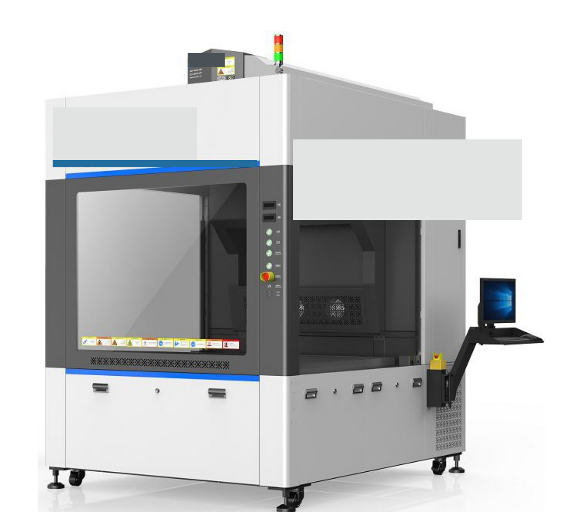
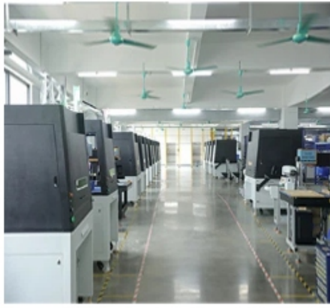

01
Texlaser
MÁQUINAS LASERAcabamento, marcação e personalização com mais controle, repetibilidade e liberdade criativa para jeans, camisetas e tecidos.
↗
Soluções industriais em laser e ozônio para transformar processos em mais precisão, produtividade e resultado.
Duas frentes. Uma visão de processo.
A Texlaser Group distribui tecnologia industrial para empresas que não podem parar. Unimos soluções laser e ozônio a uma visão prática de operação, implantação e resultado.
Converse com a nossa equipe ↗Atendimento próprio em São Paulo, com foco em aplicações reais e relações de longo prazo.
TX / 01 — BRASILTecnologia certa para o processo certo. Começamos pelo universo do jeans e das lavanderias industriais.
Acabamento, marcação e personalização com mais controle, repetibilidade e liberdade criativa para jeans, camisetas e tecidos.
Geradores de ozônio para aplicações industriais em lavanderias, tratamento de água e efluentes, alimentos e outros processos.
Laser CO₂ para jeans e tecidos
Uma plataforma industrial para criar efeitos, marcar e transformar superfícies têxteis com precisão. Projetada para entrar no fluxo da produção e dar mais consistência ao resultado.
Falar sobre esta solução ↗
*Condições e escopo a confirmar.
Uma base tecnológica que acompanha a necessidade do seu processo — hoje e na próxima etapa.

Conversamos sobre o seu processo, volume e desafio.
Encontramos a configuração que faz sentido para a operação.
Apoiamos a entrada da tecnologia na rotina da fábrica.
Treinamento e suporte para manter a produção evoluindo.
Conte um pouco sobre a sua operação. Nosso atendente direciona você para a melhor solução.